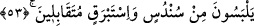

53. İnce ipekten ve parlak atlastan giysiler giyerek karşılıklı otururlar.
“İnce ipekten ve parlak atlastan giysiler giyerek karşılıklı otururlar” bu ikinci
haberdir. “ kelimesinin hemzesi hemze-i katı’ olup okunur. İmam Halîl bu
hemzeyi vasl etmiş vestebrak şeklinde okumuştur.
Keşfü’l-esrâr’da şöyle denilmektedir: Sündüs ince ipektir ve ipek türlerinin en çok
satılanıdır. Bu çeşit ince ipek gömlek ve etek gibi dış elbise olarak giyilmesi mutâddır.
İstebrak ise kalın ipek olup dokumasının sık ve doluluğundan dış elbise mesâbesindedir.
İpeğin en üstün olanı budur. İpek başlıca iki çeşittir, bunlardan biri ne kadar ince olursa
o kadar enfes ve değerli olur. Diğeri ise ibrişimi ne kadar sık dolu ve ağır olursa o
kadar enfes olur.
Fakir (Bursevî) der ki: Belki de sündüs mukarreblerin, istebrak ise ebrârın elbiseleri
olabilir. Mukarreblerin şaraplarının hâlis tesnîmden, ebrârın şarâbının ise tesnîm
karışımı şaraptan oluşu da buna delâlet eder. Çünkü mukarrebler zât, ebrâr ise sıfat
ehlidirler. Nasıl ki zât sıfatlardan daha hassas ve nazik ise, bunun gibi zât ehlinin
elbiseleri ve içecekleri de, sıfat ehlinin elbise ve içeceklerinden daha hâlis, berrak ve
şeffâf olacaktır. Ayrıca istebrak kelimesi Arapça olmayıp kef yerine kaf getirilerek
Arapçalaştırılmıştır.
Kàmûs’ta şöyle denilmektedir: İstebrak kalın ipek olup isterve kelimesinden
Arapçalaştırılmıştır. Bunun ism-i tasgîri übeyriktir. İstebr kelimesi “te” yahut “tı” ile
kalın mânâsına gelir.
Cevâlikî Mu‘arrabât kitabında şöyle demektedir. İstebrak kelimesi diğer dillerden
Arapçaya geçmiştir. İsm-i tasgîr yahut cem‘i mükesser yapıldığı zaman übeyrik ve
ebârik olarak gelir. Bu kalıplarda sîn ve tâ hazfedilir. Ta‘rîb demek Arapça olmayan bir
kelimeyi Arapça lafza muvâfık olacak şekilde geliş yollarını değiştirip Arapça îrâb
şekillerine icrâ etmek demektir.
Tamamen Arapça olan Kur’ân’da böyle diğer dillerden gelerek Arapçalaşmış lâfızlar
olabilir. Çünkü yabancı kelime Arapçalaştırıldığı zaman artık yabancı kelime olmaktan
çıkar. Ve diğer Arapça lafızlardan farksız olarak kendisinde aynen hâlis Arapça gibi
tasarruf edilir. Kur’ân Arapça değil, başka bir dildedir, diyen kâfir olur. Çünkü bu iddâ
Allah Teâlâ’nın “Biz düşünüp anlamanız için onu Arapça bir Kur’ân yaptık”
(Zuhruf, 43/3) kavliyle zıtlık arz etmektedir. Ancak Kur’ân’da bazı yabancı kelimeler
var, derse, bu durumda bakılır. Bununla bazı kelimelerin aslen yabancı olup sonradan
Arapçalaştırılmış olduğunu murâd ederse bu doğrudur. Hayır, şu kelime,
Arapçalaştırılmamış orijinal ve aslî olarak yabancı kelimedir, derse bu yanlıştır.
Birbirleriyle ünsiyet kurabilmeleri için meclislerde böyle “karşılıklı otururlar”.
“Mütekabilîn” demek yüzyüze karşılıklı oturup birbirlerinin enselerine değil yüzlerine
bakarlar, demektir. Bazıları, âilelerinin etrafında dönerler ki, bu durum ünsiyete daha
elverişlidir. Sûrâbâdî Tefsîr’inde şöyle geçer: Bu mukabele dâr-ı Celâl’deki ziyâfet